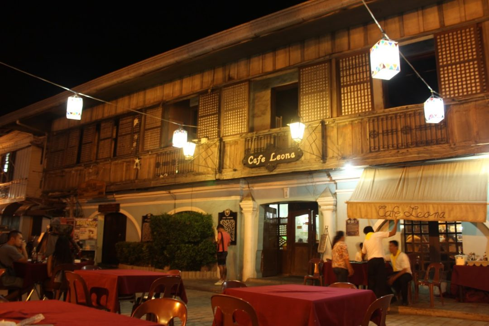

The Philippines features various historical sites that have withstood the test of time and acted as witnesses to many historical events, ranging from the pre-colonial period through the liberation wars. One of these is Vigan, which has the well-known Calle Crisologo. Calle Crisologo is a street lined with historic Spanish constructions, most of which are the homes of rich families and Filipino-Chinese traders. This is where you'll find the renowned cobblestone streets that are synonymous with Vigan. Many people are unaware that before the name Calle Crisologo, the street was known as Calle Escolta de Vigan when Juan de Salcedo discovered the town in 1572. The roadway existed before to the Galleon Trade.
Café Leona, which serves a blend of local and Western food, is one of Vigan's most popular restaurants along Calle Crisologo. At night, the cafe's outside eating area is packed with people who want to take in the splendor of the famed cobblestone street, along with all the lights and rustic charm of the neighboring Spanish-built houses. A monument of its owner, Vigan's famed Ilocano poet Leona Florentino, stands beside Café Leona. The cafe's Ilocano meals, which are skillfully combined with Japanese and Italian flavors, add to the cafe's pleasant ambience. Pinakbet, Vigan Longganisa, and Bagnet are among the cafe's local favorites.
On top of their Japanese menu is Bagnet-Bacon Maki with sashimi and sushi rolls. This special Ilocano-Japanese meal has Bagnet or crispy pork belly wrapped in seaweed nori and a crunchy bacon strip. Another flavorful dish with a unique Ilocano and Italian twist is their woodfired Pinakbet Pizza topped with Vigan Longganisa.

Source: Magnanimous Runner's YouTube Channel
Location
1 Crisologo, Brgy 2, Vigan City, 2700 Ilocos Sur Official FB page
Socials
@TRAVELPHOfficialTRAVELPH OfficialTRAVEL PH Official Page
 @TRAVELPHOfficial
@TRAVELPHOfficial